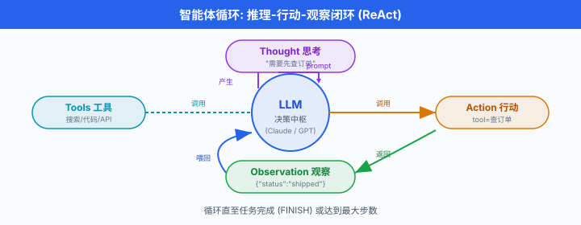
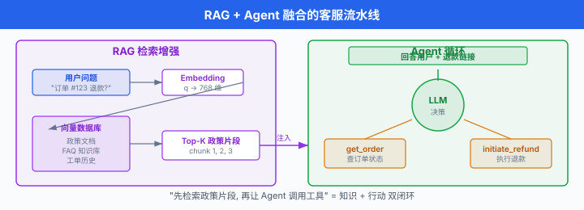
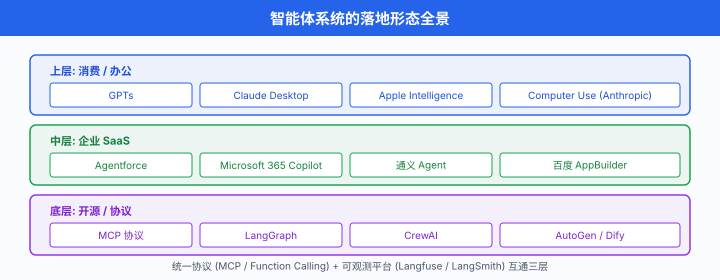

智能体系统¶
一句话总结：智能体 (Agent) 把大模型从"会聊天"升级为"会做事"，通过工具调用、规划与记忆完成多步任务；本节从企业、个人、与中国生态三个维度拆解落地场景，并给出工程化必需的成本、可观测性、安全与失败兜底框架。
2024 年是 AI 智能体的分水岭：Anthropic 发布 MCP 协议 (2024-11) 试图统一工具接入规范，OpenAI 推出 GPTs，中国厂商从阿里通义、百度千帆到字节 Coze 全员下场，一夜之间"智能体平台 (Agent Platform)"成为 SaaS 行业的新 KPI. 与 Ch23 的原理讲解互补，本节专注"用在哪、怎么选、怎么落地".
1. 从聊天到干活：智能体是什么¶
智能体 (Agent) 这一概念最早可追溯至经典人工智能的"理性主体" (rational agent) 定义 — 一个能感知环境、做出决策并执行动作的系统。 但 2023 年以来讨论的"AI 智能体"，几乎都默认基于大语言模型 (LLM) 作为决策中枢。 Anthropic 在 2024 年 12 月发表的《Building Effective Agents》3 一文中，给出当下行业最简洁的工程定义:
Agent = LLM + 工具 (tools) + 指令 (instructions) + 自主循环 (loop)
更直白地说，智能体就是：让 LLM 在每一轮推理后，不仅能"说话"，还能选择调用外部工具 (搜网页、读数据库、执行代码、发邮件…)，然后根据工具返回的结果决定下一步动作，直至任务完成或达到停止条件。 这套"推理 + 行动"循环的学名叫 ReAct (Reasoning + Acting) (Yao et al., 2022, arXiv:2210.03629)1.
1.1 为什么 2024 年突然爆发¶
三股力量同时到位:
- 模型能力 — Claude 3.5 Sonnet、GPT-4o、Gemini 1.5 Pro 等模型在函数调用、指令遵循、长上下文上达到工业级可用阈值
- 协议标准化 — Anthropic MCP (2024-11-25) 2、OpenAI Function Calling、Google Gemini API 共同把"工具调用"做成了行业共识
- 平台化基建 — Vercel AI SDK、LangChain、Anthropic SDK、阿里百炼、百度千帆提供从原型到部署的全链路
下面这张图刻画了一个典型智能体循环的骨架:

图 1：经典 ReAct 循环。 每轮 Agent 先"思考" (Thought)，再选择"行动" (Action：调用工具)，然后"观察" (Observation：工具返回结果)，循环直至任务完成.
1.2 一个最小可运行的智能体¶
下面这段 Python (使用 Anthropic Python SDK 0.40+ 与 MCP 客户端) 展示了一个"会查日历"的极简 Agent — 没有 RAG，也没有复杂规划，但涵盖了智能体的全部必要零件:
# minimal_agent.py
import anthropic
from datetime import datetime
client = anthropic.Anthropic()
# 1. 工具定义 (tools) — 模型能调用的"手"
TOOLS = [{
"name": "get_current_time",
"description": "返回服务器当前时间, 用于回答'现在几点'类问题.",
"input_schema": {
"type": "object",
"properties": {},
"required": []
}
}]
def get_current_time():
return datetime.now().strftime("%Y-%m-%d %H:%M:%S")
# 2. 工具调度表 (dispatch table)
DISPATCH = {"get_current_time": get_current_time}
# 3. ReAct 循环: 推理 -> 行动 -> 观察 -> 再推理
def run_agent(user_query: str, max_steps: int = 5) -> str:
messages = [{"role": "user", "content": user_query}]
for step in range(max_steps):
resp = client.messages.create(
model="claude-sonnet-4-5",
max_tokens=1024,
tools=TOOLS,
messages=messages,
)
# 终止条件: 模型直接给出文本回答
if resp.stop_reason == "end_turn":
return resp.content[0].text
# 模型决定调用工具
if resp.stop_reason == "tool_use":
tool_block = next(b for b in resp.content if b.type == "tool_use")
tool_name = tool_block.name
tool_input = tool_block.input
# 执行工具 (生产环境应加沙盒 + 超时 + 权限校验)
result = DISPATCH[tool_name](**tool_input)
# 把工具结果塞回消息历史, 让模型进入下一轮推理
messages.append({"role": "assistant", "content": resp.content})
messages.append({
"role": "user",
"content": [{
"type": "tool_result",
"tool_use_id": tool_block.id,
"content": str(result),
}]
})
return "(达到最大步数, 任务未完成)"
print(run_agent("现在几点了? 北京时间."))
注意三件事:
- 没有"规划器" — 模型本身就是规划器，它在
tool_use块里隐式决定了下一步 - 没有"记忆库" — 仅有当前的
messages列表作为短期记忆 - 没有"反思" — 工具调用失败时模型直接拿到错误字符串，让它自己决定是否重试
真实生产环境的智能体，无非是在这三处加东西：加长期记忆 (向量数据库)、加规划 (显式 CoT 或 Planner-Worker 模式)、加反思 (Critic 子智能体评分). 后面 §5 我们会展开。
1.3 期望效用：为什么智能体有效¶
理论上，智能体的合理性可以借助马尔可夫决策过程 (Markov Decision Process, MDP) 解释。 状态 \(s_t\) 是当前的对话历史 + 工具返回，动作 \(a_t \in \mathcal{A}\) 是"回复用户"或"调用某个工具"，奖励 \(r_t\) 是任务完成度 (人工或 LLM-as-Judge 给出). Agent 的目标是最优化累计折扣奖励:
但 LLM 智能体并不"显式"求解 Bellman 方程 — 它通过下一个 token 的对数似然，隐式地近似最优动作分布。 这是一种"语言作为策略" (language-as-policy) 的新范式：模型参数 \(\theta\) 编码了一个规模极大、但精度有限的策略网络 \(\pi_\theta(a_t \mid s_t)\).
工具调用次数 \(N_{\text{tools}}\) 与任务成功率 \(\rho\) 之间常呈对数饱和关系 (经验拟合):
即：给定难度下，允许更多工具调用能提升成功率，但很快边际收益递减。 工程上我们用这条曲线决定 max_steps 的合理上限 (常见取值 5-15).
2. 企业智能体：重塑四大核心场景¶
智能体在企业最先突破的是四个高重复、低风险的"长尾"任务：客服、办公助理、数据分析、编程。 这四类场景的共同特征是：单次任务价值低 (几十到几百美元)、但发生频次极高，因此 ROI 显著。
2.1 智能客服：Salesforce Agentforce 与 Intercom Fin¶
客服是企业落地智能体的第一战场. 两个代表产品:
- Salesforce Agentforce (2024-09-12 GA)4 — 把 Agent 作为 Salesforce 平台的一等公民，能读取 CRM 记录、调用 Apex 流程、自动开 ticket. 客户案例包括 Wiley、OpenTable.
- Intercom Fin (2023 年首发，持续迭代)5 — 定位"the highest performing Customer Agent"，支持邮件、聊天、语音多渠道。 Fin 引入了"AI Agent + Human Handoff"工作流：答不上来就转人工。
技术栈差异:
| 维度 | Agentforce | Intercom Fin |
|---|---|---|
| 底层模型 | Einstein Trust Layer (托管第三方 + 自研微调) | GPT-4 / Claude (通过 Fin 编排层) |
| 知识接入 | Data Cloud (CRM + 外部 DB) | Help Center + 上传文档 |
| 工具能力 | 调用 Flow / Apex / Slack / Teams | 调用 Intercom Workflow + Webhook |
| 安全边界 | 角色权限继承 Salesforce 用户体系 | 独立 API key，自定义白名单 |
2.2 内部助理：Microsoft 365 Copilot 与 Google Workspace AI¶
办公套件的智能体已经"住进了"每个员工的日常:
- Microsoft 365 Copilot (2023-09 宣布 GA, 2023-11-01 对购买 300+ 席位的客户开放) 6 — 跨 Word / Excel / PowerPoint / Outlook / Teams 协作，使用 Microsoft Graph 检索邮件、文档、会议纪要。 2024 年底加入了 Copilot Studio 用于低代码 (Low-Code) 自定义 Agent.
- Google Workspace AI (Gemini for Workspace) — 集成在 Gmail、Docs、Sheets, 2024-2025 持续推送"帮我写"、"帮我总结"、"帮我可视化".
这两个产品的共性：数据不出企业租户 (Microsoft 365 Copilot 强调"your data, your control")，模型推理在合规云区域完成，这是企业级 Agent 与消费级 Agent 的关键分水岭。
2.3 数据分析：Julius AI 与 ChatGPT Advanced Data Analysis¶
把"自然语言提问 → 自动生成 SQL / Python → 输出图表"做成产品的代表:
- Julius AI — 专注于"对话式数据分析"，支持上传 CSV/Excel，模型自动生成 pandas 代码并在沙盒 (sandbox) 中执行。
- ChatGPT Advanced Data Analysis (前身 Code Interpreter, 2023-07 推出) — ChatGPT 内置的 Python 沙盒执行环境，用户上传文件即可分析。 2024 年下半年升级为 Advanced Data Analysis 并强化可视化。
工程实现要点:
- 代码生成 → 沙盒执行 → 结果回传 三段式 pipeline
- 沙盒必须隔离 — 不能让模型直接操作用户本地文件系统 (Docker / Firecracker / E2B 是常见选择)
- 结果可追溯 — 用户能看到模型生成的代码，避免"幻觉式图表"
2.4 编程智能体：从 Copilot 到 Devin¶
这是 2024 年最卷、争议最多的赛道:
| 产品 | 形态 | 核心能力 |
|---|---|---|
| GitHub Copilot (2021 首发，2024 GA 多 Agent) | IDE 插件 | 单文件补全、聊天、PR Agent |
| Cursor (Anysphere, 2023) | 独立编辑器 | Agent 模式跨文件编辑 + 重构 |
| Claude Code (Anthropic, 2025-02 公开预览) | CLI 工具 | 长任务、自主 PR、文件搜索 |
| Devin (Cognition Labs, 2024-03 演示) 7 | 自主软件工程师 | SWE-bench 13.86% 解出率 |
Devin 的争议：2024 年 3 月 Cognition Labs 发布 Devin 演示时宣称 SWE-bench 通过率 13.86% (当时 SOTA 仅 1.96%)，但后续被指评估时只跑了 25% 子集，且未公开完整日志；同时 SWE-Agent (Yang et al., 2024, arXiv:2405.15793) 8 在论文中报告同等开源设置下也能达到 12%+ 通过率。 这场争议的核心不是"模型能不能写代码"，而是"如何诚实地评估一个长任务智能体". 客观地说，截至 2026 年，Devin 在企业付费场景 (长尾 bug 修复、内部工具搭建) 已有真实生产部署，但独立接管完整工程任务的能力仍有显著差距。
3. 个人智能体：装进每个人的工作流¶
3.1 OpenAI GPTs 与 GPT Store (2023-11 推出) 9¶
用户用自然语言配置一个 GPT：起名字、写描述、喂知识文件、勾选工具 (Web Browsing / DALL-E / Code Interpreter)，然后发布到 GPT Store. 这是历史上第一次让"非工程师也能做 Agent"，但因 GPT Store 中同质化严重、缺乏统一质量评估，流量主要集中在头部几个垂直应用。
3.2 Perplexity Pro Search¶
Perplexity 的"Pro Search"将搜索拆为多步：模型决定先搜什么、读完一段决定是否继续深挖，最终汇总为带引用的回答。 这本质上是一个"无工具调用 API，但内部多步推理 + 多次网页检索"的搜索型 Agent.
3.3 Claude Desktop 与 MCP¶
Anthropic 在 2024-11 发布 MCP 后 2, Claude Desktop 成为首批原生支持 MCP 的桌面客户端。 用户可以一键把"本地文件系统"、"GitHub"、"PostgreSQL"、"Slack"等数百个社区 MCP Server 接到 Claude，让 Claude 直接操作本地资源。 这种"通用 Agent + 通用工具协议"的组合，是 2025 年个人生产力提升的最大变量。
4. 中国智能体生态：全员下场的一年¶
中国市场的智能体平台化走得比北美更激进，因为有"应用层创新"的强需求。 主流玩家:
4.1 阿里通义千问 Agent¶
阿里云百炼平台提供完整的 Agent 构建能力，模型侧使用通义千问 (Qwen) 系列。 2025 年 Qwen-Agent 开源框架支持工具调用、规划、RAG、代码执行四大组件。 强项是"模型 + 平台 + 阿里云生态 (钉钉、淘宝、高德)" 一体化。
4.2 百度千帆 AppBuilder¶
百度智能云千帆 AppBuilder 是面向企业的 Agent 开发平台，提供 50+ 预置组件 (包括语音、地图、OCR 等百度特色能力). 千帆官方定位为"以 Agent 为核心的一站式企业级大模型服务平台".
4.3 字节 Coze (扣子) / 豆包多 Agent¶
字节跳动在 2024 年推出 Coze (国内版"扣子"，海外版 coze.com)，主打"零代码搭 Agent"：拖拽式工作流、插件市场、多 Agent 编排。 用户群体大幅超出技术圈，包括运营、销售、教师等非程序员。 字节豆包大模型为 Coze 提供底层推理。
4.4 开源框架：Dify 与 FastGPT¶
- Dify (Dify.AI, Apache-2.0-derivative 协议，GitHub 150k+ stars) — 定位"Production-Ready Agentic Workflows"，提供可视化 Workflow Studio、知识库、插件市场。 同时提供云端 SaaS (Dify Cloud) 和企业版 (Dify Enterprise).
- FastGPT (中国社区开源，GitHub 28k+ stars) — 专注"开箱即用的 RAG + Agent 平台"，支持可视化编排、问答对管理、API 调用。 在中文知识库场景里有显著优势。
4.5 MetaGPT：中国学术界的代表作¶
MetaGPT (Hong et al., 2023, arXiv:2308.00352) 10 由 DeepWisdom 团队 (中国深圳 + 德国 AI 大佬 Jürgen Schmidhuber 联合署名) 提出，是"多智能体软件公司"的开源框架。 它把"标准作业流程 (Standard Operating Procedures, SOPs)"编码进 Agent 角色：产品经理、架构师、工程师、QA，各自扮演，协同产出代码。 这是中文 AI 社区在多智能体框架上的代表作，GitHub 50k+ stars.
4.6 多智能体编排框架三剑客¶
最后必须提一下多 Agent 框架的"三剑客":
- AutoGen (Wu et al., Microsoft Research, 2023, arXiv:2308.08155) 11 — 基于对话的多 Agent 框架，通过"群聊"模式让多个 Agent 协商。 老牌，文档丰富。
- LangGraph (LangChain 团队，2024) 12 — 基于图 (DAG) 的编排框架，把 Agent 视为状态机上的节点，适合复杂、有循环的工作流。
- CrewAI (2024) — 用"角色 + 任务 + 流程"的隐喻降低上手门槛，强调"像管团队一样管 Agent".
5. 工程化四道关：成本、可观测性、安全、失败兜底¶
把智能体从 demo 推到生产，90% 的时间不是花在模型选型上，而是花在下面四个问题上。
5.1 成本控制：Token 用量的天花板¶
智能体的成本随调用链深度指数增长：一轮用户问题触发 N 次工具调用，每次工具调用又把历史塞回上下文，第 k 轮的 prompt token 大致为:
如果不加控制，一个 5 步 Agent 的输入成本就能吃掉一次普通对话的 10 倍。 业界常用三种控本技巧:
- 上下文压缩 — 每轮结束后用一个小模型总结历史，只保留摘要
- 结果截断 — 工具返回值超过阈值时只保留前 N 行 + 关键字段
- 早停 (early stopping) — 检测到 Agent 重复同一动作超过 2 次，强制结束
总成本公式 (一次任务):
其中 \(c_{\text{in}}, c_{\text{out}}\) 是模型单价 (USD / 1k token), \(c_{\text{tool}}\) 是外部 API 调用费。
下表对比了三种典型策略在 100 次客服任务上的近似 token 消耗:
| 策略 | 平均步数 | 平均输入 token | 平均输出 token | 单次成本 (USD) |
|---|---|---|---|---|
| 朴素 ReAct (无优化) | 6.2 | 8,500 | 620 | 0.043 |
| + 上下文压缩 | 6.2 | 3,100 | 620 | 0.018 |
| + 早停 (≤ 3 步) | 3.1 | 2,400 | 410 | 0.011 |
表 1：同一客服任务下，不同优化策略的 token 与成本对比 (基于 Claude Sonnet 4.5 定价估算). 工程经验：早停 + 上下文压缩可降本 60% 以上.
5.2 可观测性：像微服务一样追踪 Agent¶
智能体比传统微服务更难调试：不确定性来自 LLM，而非纯代码。 三大主流可观测平台:
| 平台 | 开源 | 强项 |
|---|---|---|
| LangSmith (LangChain 团队) | SaaS 为主 | 与 LangChain / LangGraph 深度集成 |
| Langfuse | MIT 协议 (社区版，GitHub 31.9k stars) | 框架无关，OpenTelemetry 兼容 |
| Helicone | 部分开源 | AI Gateway + 缓存 + 成本归因 |
下面是一个最小可运行的 Langfuse 集成示例，演示如何把一次 Agent 调用的所有 Span 记录到 Langfuse:
# observability_with_langfuse.py
from langfuse import Langfuse
from langfuse.decorators import observe, langfuse_context
import anthropic
langfuse = Langfuse() # 自动从环境变量读 LANGFUSE_PUBLIC_KEY / SECRET_KEY
client = anthropic.Anthropic()
@observe(name="agent_step") # 每个工具调用记一个 span
def call_tool(tool_name, tool_input):
# ... 实际工具执行 ...
return f"工具 {tool_name} 执行结果"
@observe(name="react_loop", as_type="chain")
def run_agent(query):
messages = [{"role": "user", "content": query}]
for step in range(5):
# 把每轮 LLM 调用自动记为子 span
with langfuse_context.update_current_observation(
name=f"llm_call_step_{step}",
metadata={"step": step},
) as obs:
resp = client.messages.create(
model="claude-sonnet-4-5",
max_tokens=1024,
tools=[],
messages=messages,
)
obs.update(output=resp.content[0].text)
messages.append({"role": "assistant", "content": resp.content[0].text})
return messages[-1]["content"]
run_agent("帮我总结上周的项目进展")
5.3 安全边界：工具权限与沙盒¶
工具调用是 Agent 最大的攻击面。 2025 年 OWASP 发布的 LLM Top 10 把"Tool Misuse"列为前 3 风险。 工程上必须做四件事:
- 白名单工具 — 模型只能看到你显式注册的 N 个工具，不能凭空调出
rm -rf - 参数校验 — 用 Pydantic / Zod 对模型输出的工具参数做强类型校验
- 沙盒执行 — 代码执行类工具必须在隔离环境 (Docker / Firecracker / gVisor) 中跑
- 人工确认 (Human-in-the-Loop) — 危险动作 (发邮件、删数据库、对外 API 调用) 必须人工点击确认
5.4 失败兜底：优雅降级¶
Agent 一定会失败 — 模型幻觉、工具超时、网络中断、API rate limit. 设计兜底策略:
- 降级到非 Agent 模式: Agent 连续失败 2 次，退回到"直接 LLM 回答"
- 保存中间状态：让用户能从中断点继续，而不是从头开始
- 明确告诉用户：不要让 Agent 假装成功，必须显式说明"我没能完成 X，因为 Y"
6. 案例研究：一个完整的客服 Agent¶
我们走一遍从需求到部署的完整流程。 假设你在一家 SaaS 公司，客服成本高企，想做一个"订单查询 + 退款发起"的智能体。
6.1 需求与边界¶
- 能做：查询订单状态、查物流、根据政策发起退款
- 不能做：修改账户密码、删除账户、跨用户查询
- 降级条件：用户连续 3 次表达不满，转人工
6.2 工具清单¶
[
{
"name": "get_order",
"description": "根据订单号查询订单详情",
"input_schema": {
"type": "object",
"properties": {"order_id": {"type": "string"}},
"required": ["order_id"]
}
},
{
"name": "initiate_refund",
"description": "对订单发起退款, 仅在客服 Agent 流程中使用",
"input_schema": {
"type": "object",
"properties": {
"order_id": {"type": "string"},
"reason": {"type": "string", "enum": ["damaged", "not_as_described", "late"]}
},
"required": ["order_id", "reason"]
}
}
]
6.3 接入 RAG：政策知识库¶
客服 Agent 必须"读"公司退款政策。 这就是 RAG 与 Agent 融合的典型场景:
# rag_agent_pipeline.py
from sentence_transformers import SentenceTransformer
import faiss
embedder = SentenceTransformer('BAAI/bge-m3')
index = faiss.read_index("refund_policy.faiss")
def retrieve_policy(query: str, k: int = 3) -> list[str]:
"""检索相关政策段落, 返回文本列表."""
q_vec = embedder.encode([query])
_, I = index.search(q_vec, k)
return [policy_docs[i] for i in I[0]]
# 在 Agent 循环里, 给 LLM 多塞一段 system 指令:
SYSTEM = """你是某电商客服 Agent. 你可以调用 get_order 和 initiate_refund 两个工具.
退款政策 (RAG 检索结果):
{policy_snippets}
回答时请:
1. 先调用 get_order 拿到订单状态
2. 根据政策判断是否符合退款条件
3. 符合则调用 initiate_refund, 否则礼貌拒绝
"""
RAG + Agent 的标准 pipeline 长这样:

图 2：用户问题先经过 RAG 检索 (左) 取回相关政策，再连同工具定义一起注入 Agent 循环 (右). 这是 2025 年企业知识型 Agent 的标准架构.
6.4 部署与监控¶
- 用 Langfuse / LangSmith 记录每次会话的 trace
- 设置告警：当"工具调用失败率" > 5% 或"用户转人工率" > 30% 时通知值班
- 每周跑一次离线评估 (LLM-as-Judge)：抽样 200 条会话，评分"准确性 / 合规性 / 语气"
7. 案例研究：代码 Agent (借鉴 SWE-Agent)¶
Yang et al. (2024, arXiv:2405.15793) 8 在 Princeton NLP 提出的 SWE-Agent 是"代码 Agent"的经典架构。 核心思想是给 LM 一个定制的 Agent-Computer Interface (ACI) — 不是直接喂命令行，而是简化成 LM 友好的"原子操作"：打开文件、滚动到第 N 行、搜索代码块、运行测试。
7.1 为什么不用直接命令行¶
直接 shell 对 LM 不友好:
- 大量 token 浪费在命令帮助文档、路径展开
- 错误信息难以让 LM 自我纠正
- 容易触发危险命令 (rm, chmod)
SWE-Agent 的 ACI 通过专用命令把复杂度封装起来:
# ACI 简化示例 (非原文)
open file_path=<path> # 打开文件并生成带行号的视图
scroll_down lines=50 # 在视图中下滚
find_class class_name=<name> # 跳转到类定义
edit file=<path> start=<line> end=<line> # 替换代码段
submit # 任务完成
7.2 一个最小 SWE-Agent 风格 demo¶
# mini_swe_agent.py
import re
class MiniSWEAgent:
def __init__(self, repo_path: str, model):
self.repo = repo_path
self.model = model
self.view = "" # 当前文件视图
self.cursor = 0 # 当前行
def cmd_open(self, file_path: str) -> str:
with open(f"{self.repo}/{file_path}") as f:
lines = f.readlines()
self.view = "\n".join(f"{i+1:4}| {l}" for i, l in enumerate(lines))
self.cursor = 0
return f"已打开 {file_path}, 共 {len(lines)} 行"
def cmd_scroll(self, lines: int) -> str:
new_cursor = max(0, min(len(self.view.split('\n')) - 50,
self.cursor + lines))
self.cursor = new_cursor
return "\n".join(self.view.split('\n')[new_cursor:new_cursor+50])
def cmd_find(self, pattern: str) -> str:
for i, line in enumerate(self.view.split('\n')):
if re.search(pattern, line):
self.cursor = max(0, i - 5)
return f"找到 {pattern} 在第 {i+1} 行"
return f"未找到 {pattern}"
def run(self, issue: str, max_steps: int = 15) -> str:
prompt = f"""你是代码修复 Agent, 仓库: {self.repo}
当前 issue: {issue}
你可以使用以下命令:
- open file_path=<path>
- scroll_down lines=<n>
- find pattern=<regex>
- submit (任务完成时)
每轮先简短思考, 再输出一个命令."""
# 真实场景下用 LLM API 替换这里的简单循环
for step in range(max_steps):
action = self.model(prompt + self.view[self.cursor:])
if action.startswith("submit"):
return action.replace("submit", "").strip()
cmd, _, arg = action.partition(" ")
if cmd == "open":
self.cmd_open(arg.split("=")[1])
elif cmd == "scroll_down":
self.cmd_scroll(int(arg.split("=")[1]))
elif cmd == "find":
self.cmd_find(arg.split("=")[1])
return "(未完成)"
8. 未来趋势：平台化、多智能体、桌面 Agent¶
8.1 Agent-as-a-Service 与平台化¶
到 2026 年，主流预测 (Gartner、IDC) 都把"Agent 平台"列为企业 IT 采购的 Top 3 类目。 平台化意味着:
- 企业不再自己训练或微调 Agent，而是像当年用数据库一样"接入"供应商平台
- 定价模型从 SaaS 订阅 → 用量计费 (per Agent invocation)
- 企业内部会同时跑多个供应商的 Agent，因此 MCP 这种"工具/数据接口标准"至关重要
8.2 多 Agent 协作¶
单 Agent 的天花板明显，因为单个上下文窗口难以同时容纳"复杂任务的全部子目标". 多 Agent 模式分三类:
- 监督者模式 (Supervisor) — 一个 LLM 当调度，多个 worker Agent 各管一摊
- 群聊模式 (Group Chat) — 多个 Agent 共享消息列表，互相讨论 (AutoGen 经典)
- 流水线模式 (Pipeline) — Agent A 输出作为 Agent B 输入 (流水线式，LangGraph 适合)
8.3 与 RAG 的深度融合¶
"Agent + RAG"已经不再是两个独立模块，而是融合为"检索-增强型 Agent"：每一步推理前都可以触发检索，检索的内容可以直接作为工具调用的输入。 这种架构在企业知识库、技术支持、研发辅助场景下正在成为标配。
8.4 桌面 Agent：从 Computer Use 到 Apple Intelligence¶
最后必须提的两个里程碑:
- Anthropic Computer Use (2024-10-22 公开 beta) 13 — 让 Claude 直接看屏幕、操作鼠标键盘，像人一样使用任何 GUI 软件。 首批应用包括自动化测试、批量数据录入。
- Apple Intelligence (2024-06-10 WWDC 发布，2024-10-28 全面推送) 14 — Apple 把"系统级 Agent"做进 iOS / macOS，包括深度整合的 Siri (ChatGPT 兜底)、写作工具、Image Playground、Visual Intelligence.
这两个方向都暗示：智能体的下一个战场不在"聊天框"，而在"操作系统". 届时 Agent 不再是单独的应用，而是像当年的"系统服务"一样，默默替你做事。
最后，我们用一张全景图把本章涉及的所有落地形态串起来:

图 3：智能体落地的三层生态 — 上层是消费/办公 (GPTs / Claude Desktop / Apple Intelligence)，中层是企业 SaaS (Agentforce / Copilot / 通义 Agent)，底层是开源与协议 (MCP / LangGraph / CrewAI). 三层通过统一的协议 (MCP、Function Calling) 和可观测平台 (Langfuse / LangSmith) 互通.
📌 本节要点¶
- 智能体 (Agent): LLM + 工具 + 指令 + 自主循环，通过 ReAct 推理-行动模式完成多步任务，是 2024 年后大模型应用的主流形态。
- ReAct: Yao et al. 2022 提出的推理 + 行动范式，arXiv:2210.03629，是几乎所有 Agent 框架的鼻祖。
- MCP (Model Context Protocol): Anthropic 2024-11-25 发布的开放标准，统一 LLM 与工具/数据源的接口，Claude Desktop 首批原生支持。
- 企业四场景：智能客服 (Agentforce / Fin)、办公助理 (Microsoft 365 Copilot)、数据分析 (Julius AI / Advanced Data Analysis)、编程 (Copilot / Cursor / Claude Code / Devin).
- 中国生态：阿里通义 Agent、百度千帆 AppBuilder、字节 Coze 开箱即用；Dify / FastGPT / MetaGPT 是开源代表；AutoGen / LangGraph / CrewAI 是国际开源三剑客。
- 工程四道关：成本控制 (上下文压缩 + 早停)、可观测性 (LangSmith / Langfuse / Helicone)、安全边界 (白名单 + 沙盒 + Human-in-the-Loop)、失败兜底 (降级 + 状态保存).
- 代表性论文: MetaGPT (Hong et al. 2023, arXiv:2308.00352)、SWE-Agent (Yang et al. 2024, arXiv:2405.15793)、ReAct (Yao et al. 2022, arXiv:2210.03629)、AutoGen (Wu et al. 2023, arXiv:2308.08155).
- 未来方向: Agent-as-a-Service 平台化、多 Agent 协作 (监督者/群聊/流水线)、RAG 深度融合、桌面 Agent (Computer Use + Apple Intelligence).
参考文献¶
-
Yao, S., Zhao, J., Yu, D., Du, N., Shafran, I., Narasimhan, K., & Cao, Y. (2022). ReAct: Synergizing Reasoning and Acting in Language Models. arXiv:2210.03629. https://arxiv.org/abs/2210.03629 ↩
-
Anthropic. (2024, November 25). Introducing the Model Context Protocol. https://www.anthropic.com/news/model-context-protocol ↩↩
-
Schluntz, E. S., & Zhang, B. (2024, December 19). Building Effective Agents. Anthropic Research. https://www.anthropic.com/research/building-effective-agents ↩
-
Salesforce. (2024, September 12). Agentforce: Now Generally Available. https://www.salesforce.com/news/press-releases/2024/09/12/agentforce-generally-available/ ↩
-
Intercom. Fin: The AI Customer Service Agent. https://fin.ai/ ↩
-
Microsoft. (2023, September 21). Announcing Microsoft 365 Copilot General Availability for Enterprise Customers. https://www.microsoft.com/en-us/microsoft-365/blog/2023/09/21/announcing-microsoft-365-copilot-general-availability-for-enterprise-customers/ ↩
-
Wu, S. (2024, March 12). Introducing Devin. Cognition Labs. https://cognition.com/blog/introducing-devin ↩
-
Yang, J., Jimenez, C. E., Wettig, A., Lieret, K., Yao, S., Narasimhan, K., & Press, O. (2024). SWE-Agent: Agent-Computer Interfaces Enable Automated Software Engineering. arXiv:2405.15793. https://arxiv.org/abs/2405.15793 ↩↩
-
OpenAI. (2023, November 6). Introducing GPTs. https://openai.com/index/introducing-gpts/ ↩
-
Hong, S., Zhuge, M., Chen, J., Zheng, X., Cheng, Y., Zhang, C., Wang, J., Wang, Z., Yau, S. K. S., Lin, Z., Zhou, L., Ran, C., Xiao, L., Wu, C., & Schmidhuber, J. (2023). MetaGPT: Meta Programming for a Multi-Agent Collaborative Framework. arXiv:2308.00352. https://arxiv.org/abs/2308.00352 ↩
-
Wu, Q., Bansal, G., Zhang, J., Wu, Y., Li, B., Zhu, E., Jiang, H., Zhang, S., Tao, C., Wang, C., & Wang, C. (2023). AutoGen: Enabling Next-Gen LLM Applications via Multi-Agent Conversation. arXiv:2308.08155. https://arxiv.org/abs/2308.08155 ↩
-
LangChain. (2024). LangGraph Documentation. https://docs.langchain.com/oss/python/langgraph/overview ↩
-
Anthropic. (2024, October 22). Computer Use, and a New Sonnet 3.5. https://www.anthropic.com/news/3-5-models-and-computer-use ↩
-
Apple Inc. (2024, June 10). Introducing Apple Intelligence. https://www.apple.com/newsroom/2024/06/10/introducing-apple-intelligence/ ↩